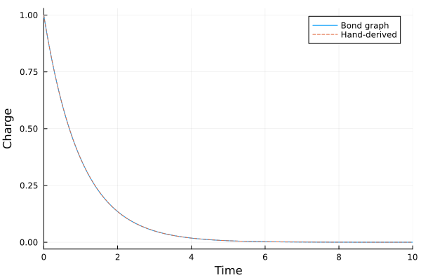

Getting Started
This section will guide you through the steps required to install the library and provide a simple example to help you get started.
Installation
To use the Bond Graph Toolkit, you need to have Julia installed on your system. If you haven't installed Julia yet, follow the official Julia documentation for instructions specific to your operating system or go directly to the Julia Download page.
Once Julia is installed, you can proceed with installing the Bond Graph toolkit by following these steps:
- Launch Julia by opening the Julia REPL or the Julia command-line interface.
- Enter the package manager by pressing the
]key. You should see the prompt change topkg>. - Inside the package manager, type the following command to add the library (it is not registered yet, so add it from its repository):
The examples also use an ODE solver, e.g.pkg> add https://github.com/felipecastrotc/BondGraph.jlpkg> add OrdinaryDiffEqTsit5, andPlotsfor the figures. - Wait for Julia to download and install the library and its dependencies. This process may take a few moments depending on your internet connection and system performance.
- Once the installation is complete, you can exit the package manager by pressing the
backspacekey or by typingCtrl+C.
Congratulations! You have successfully installed the library and are ready to start using it.
Quick Example
The source files for all examples can be found in /examples.
In this quick example, we'll showcase how to model a basic RC circuit using the bond graph method. An RC circuit comprises a resistor (R) and a capacitor (C). Below is the visual representation of such a circuit:

The capacitor discharges through the resistor. Both share the voltage $V = q/C$, and Kirchhoff's current law says the current leaving the capacitor, $-\dot{q}$, is the current through the resistor, $V/R$. So the charge $q$ on the capacitor obeys
\[R \frac{dq}{dt} + \frac{q}{C} = 0, \qquad q(t) = q_0\, e^{-t/RC}.\]
Bond Graph Representation
The resistor and the capacitor share one voltage, so in the bond graph they hang off a 0-junction. As usual for passive elements, both bonds point from the junction into the element (Karnopp, Margolis & Rosenberg, §3.1):

Using the Bond Graph Toolkit
Follow the steps below to model, obtain equations, and simulate the RC circuit using the Bond Graph Toolkit:
# Import the required libraries
using BondGraphToolkit
using OrdinaryDiffEqTsit5
using Plots
# Define the elements of the RC circuit
@named C = Compliance(C = 1.0, q = 1.0) # capacitance (F), initial charge (C)
@named R = Resistance(R = 1.0) # resistance (Ohm)
# Bond both elements to a 0-junction; a bare element `x` means the bond points out of the junction, into x
@named model = Junction0(R, C)
# Compile the model into its simplest form
sys = mtkcompile(model)
# Define and solve the ODE problem over 10 s
prob = ODEProblem(sys, [], (0.0, 10.0))
sol = solve(prob, Tsit5(), reltol = 1e-10, abstol = 1e-10)
# Plot the charge on the capacitor against the hand-derived q(t) = q₀ exp(-t/RC), with q₀ = R = C = 1
plot(sol, idxs = [model.C.q], label = "Bond graph", xlabel = "Time", ylabel = "Charge")
plot!(τ -> exp(-τ), 0, 10, label = "Hand-derived", linestyle = :dash)
The largest difference between the two on a common time grid:
tgrid = 0:0.01:10
maximum(abs, sol(tgrid; idxs = model.C.q).u - exp.(-tgrid))6.727396417716136e-12To inspect the system, the following functions can be employed:
- State Inspection:
unknowns(sys)1-element Vector{SymbolicUtils.BasicSymbolicImpl.var"typeof(BasicSymbolicImpl)"{SymReal}}:
C₊q(t)- Parameter Inspection:
parameters(sys)2-element Vector{SymbolicUtils.BasicSymbolicImpl.var"typeof(BasicSymbolicImpl)"{SymReal}}:
R₊R
C₊C- Equation Inspection:
equations(sys)\[ \begin{align} \frac{\mathrm{d}\mathtt{C.q}\left( t \right)}{\mathrm{d}t} &= - \mathtt{R.f}\left( t \right) \end{align} \]
Code Explanation
Elements.
ComplianceandResistanceare the bond-graph C and R elements. Their laws areq̇ = f,e = q / Cande = R f, written in the variables of the element's bond.Junction.
Junction0makes every bond share one effort (the voltage) and sums the flows with the sign of each bond's half-arrow:+into the junction,-out of it. WritingRdraws the bond from the junction intoR;x => :poutwould draw it fromxinto the junction.Simulation. A bond-graph model is an ordinary ModelingToolkit system, so
mtkcompile,ODEProblemandsolvework as for any MTK model. The initial charge comes from theq = 1.0keyword ofCompliance.
This section was generated using Literate.jl.